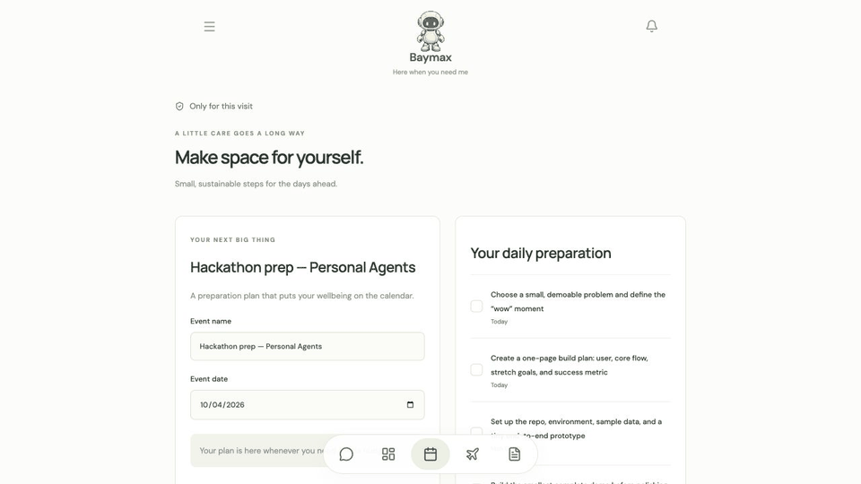
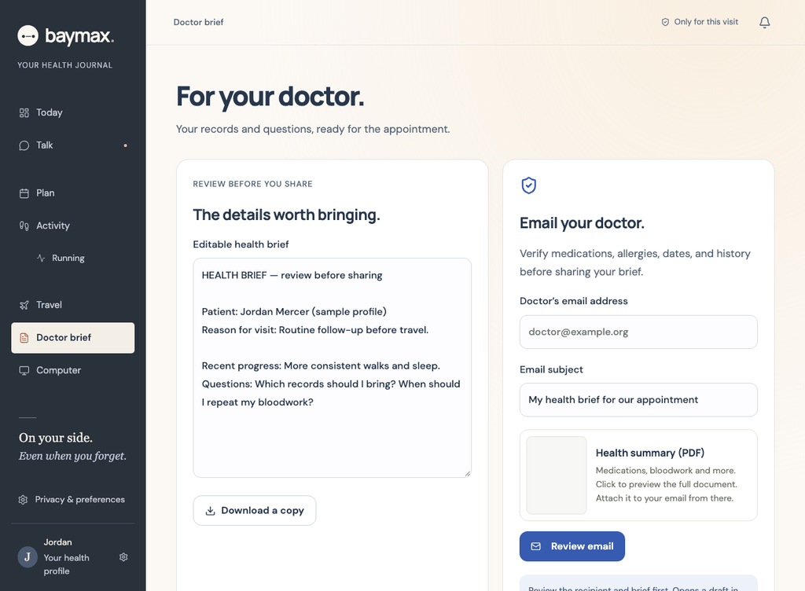
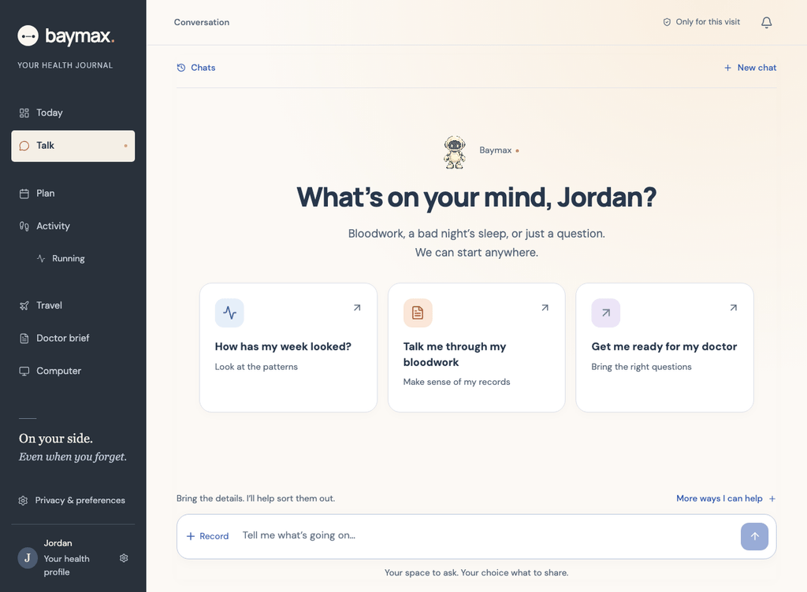
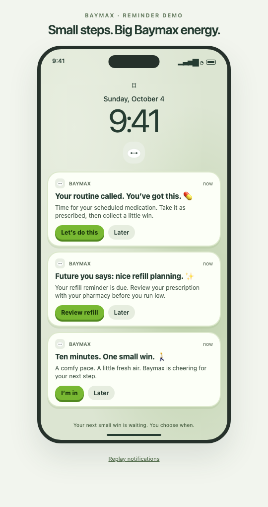

Baymax is a personal medical agent. It checks in on your sleep, water and movement, keeps track of your medication, and drafts a health brief for a new doctor when you're away from home.
“I'm travelling for a hackathon next week. Help me prepare, keep me on track every day, and help me explain my health history if I need to see a doctor.”
Baymax works through conversation. Ask in plain language and it answers with cards you can edit, tick off and act on.
Baymax builds a plan around sleep, meals, water, movement and your medication schedule, then checks in each day. Small, achievable goals, not a fitness regime.

Seeing a doctor who doesn't know you? Baymax drafts a short summary of your medications, allergies, history and questions. You edit it and decide who receives it.

Running low on a prescription? Baymax compares pharmacy options and prepares the order for you to review. It never issues prescriptions or suggests substitutes.
Pharmacies, prices and stock in this demo are illustrative. No payment is taken and no order is sent.

Short nudges to take your medication as prescribed, buy the next refill or go for a ten-minute walk. Each one opens the matching action. Baymax installs on your phone as an app.
Lock-screen reminders are a simulated concept; live push delivery isn't connected yet.

This is a hackathon prototype. Here's exactly where it stands.
| Capability | Status | Details |
|---|---|---|
| Conversation with the agent | Working | Mastra agent with live responses, streaming into Assistant UI cards |
| Remembering your care space | Working | Opt-in, saved in Neon Postgres, deletable at any time |
| Apple Health | Working | An iPhone Shortcut you run sends steps, exercise, sleep and water |
| Web research | Working | Exa search with sources shown alongside the answer |
| Doctor brief | Working | Generated, editable, handed to your email app to send |
| Install on phone | Working | Progressive web app |
| Pharmacy orders | Simulated | Order preview only; no payment or fulfilment |
| Push reminders | Simulated | Recorded concept; no background delivery yet |
HIPAA compliance has not been verified. Baymax is a prototype: use synthetic data only. It supports organisation, habits and conversations with clinicians. It doesn't diagnose, prescribe or provide emergency care.
React, TypeScript and Vite on the front end; a Mastra agent with tools on the back end.